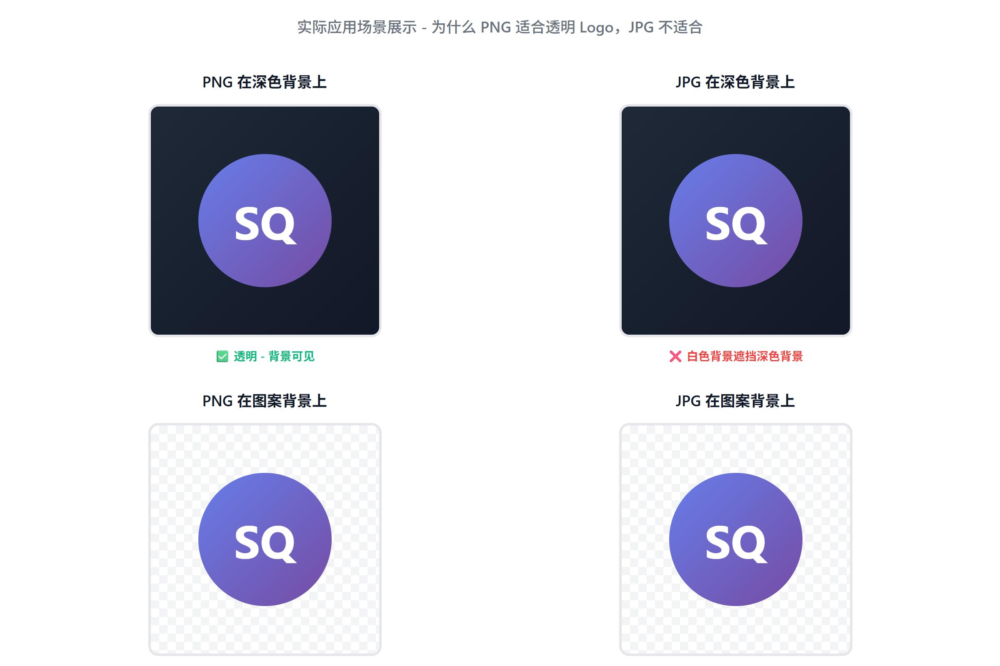
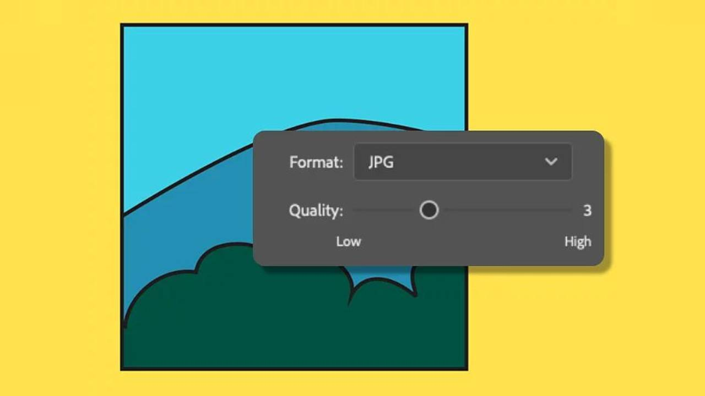
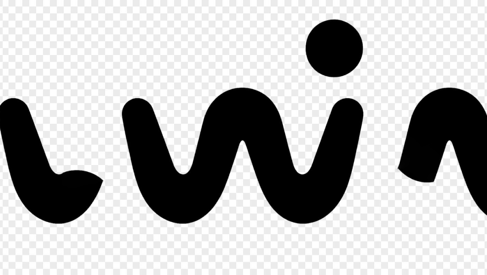
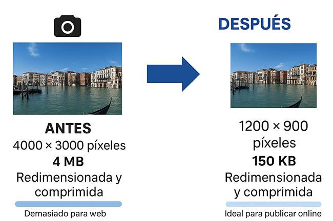

You convert a PNG image to JPG expecting a smaller file, but the result is bigger than the original. Why does that happen?
It seems strange because JPG is widely known for compressing images, especially photographs. However, converting an image to JPG does not guarantee a smaller file size. The result depends on the original image, its dimensions, the conversion settings, and how the new file is encoded.
In this guide, you'll learn why a PNG can become a larger JPG, how transparent backgrounds affect the result, and what to do when you need a smaller image for a website, email, upload, or social media post.
Quick answer: Why did your JPG become larger?
A JPG can become larger than the original PNG when the converter uses a high quality setting, preserves large image dimensions, or encodes an image that PNG was already storing efficiently.
The type of image matters, too. Photographs often compress well as JPGs, while screenshots, logos, text-heavy graphics, and images with large areas of flat color may be more efficiently stored as PNGs.
To fix the problem, check the following: Image dimensions, JPG quality, Transparency, Image content, and Actual file size.
1. PNG and JPG compress images differently
The first thing to understand is that PNG and JPG use different compression methods.
PNG uses lossless compression. This means the image's pixel information can be reconstructed without the loss introduced by lossy compression. JPG normally uses lossy compression, which reduces file size by discarding some image information in ways designed to be less noticeable to viewers.
Neither method is automatically the best for every image.

Why JPG often works well for photographs
Photographs contain complex variations in color, lighting, texture, and detail. JPG compression is designed to handle this kind of visual information efficiently. For example, a photograph of a landscape may become substantially smaller when exported as a JPG at a suitable quality setting.
Why PNG can be better for graphics
Consider a company logo with sharp edges, a screenshot containing small text, or an illustration with solid-color areas. PNG can preserve these details without introducing the same lossy artifacts associated with JPG.
When such an image is converted to JPG at a high quality setting, the resulting file may be larger than expected. The original PNG may already have represented the image efficiently.
The important lesson: JPG is often a good choice for photographs, but PNG can be a better choice for screenshots, diagrams, logos, and graphics that require sharp edges or transparency.
2. High JPG quality settings can increase file size
One of the most common things to check is the quality setting used by your image converter.
Many image editors offer a JPG quality slider or preset. A higher setting generally preserves more image detail, but it can also produce a larger file. A lower setting discards more information and may produce a smaller file, with a greater risk of visible artifacts.

Imagine converting the same photograph three times:
| Export setting | Expected trade-off |
|---|---|
| High quality | More detail retained; potentially larger file |
| Medium quality | Balance between visual appearance and file size |
| Low quality | Smaller file is possible, but artifacts may become visible |
These are qualitative comparisons, not measured test results. The actual file sizes depend on the image and encoder.
What JPG quality should you use?
For everyday web images, start with a moderate-to-high quality setting and inspect the result. If the file is still too large, lower the setting gradually.
Look closely at:
- Faces, hair, and textured surfaces
- Small text and fine lines
- Edges around objects
- Gradients, shadows, and color transitions
Do not automatically select maximum quality when your goal is a smaller upload. Equally, do not reduce quality so aggressively that the image looks visibly damaged.
3. Transparent PNG backgrounds change during conversion
Transparency is another important reason to examine your conversion settings.
PNG supports transparent and partially transparent pixels. Standard JPG does not support an alpha channel, which is the image information used to represent transparency.
Think about a logo that appears to float on a transparent background. When you convert it to JPG, the transparent areas must be replaced with a solid background or otherwise composited into the image.

Adding a background does not automatically make a JPG larger. The effect on file size depends on the resulting pixels and the encoder. However, converting a small, efficiently compressed logo or graphic to a high-quality JPG can produce an unexpectedly large result.
How to convert a transparent PNG correctly
- Open the image in your converter or editor.
- Select a background color that suits the intended use, usually white for a document or a website with a white background.
- Keep the original dimensions unless resizing is necessary.
- Export as JPG at a suitable quality setting.
- Compare the exported file size and inspect the edges.
Tip: If you need the logo to remain transparent, keep it as PNG or choose a format that supports transparency, such as WebP. Do not use standard JPG when transparency is essential.
4. Your image dimensions may be too large
An image's pixel dimensions can have a major effect on its file size.
For example, an image that is 4,000 × 3,000 pixels contains 12 million pixels. An image that is 2,000 × 1,500 pixels contains 3 million pixels.
The second image has one-quarter as many pixels. That does not mean its compressed file will always be exactly one-quarter the size, but reducing dimensions can significantly reduce the amount of image information an encoder must handle.

Check dimensions before converting
Suppose your original PNG is 1,600 × 1,200 pixels. If your converter exports it at 3,200 × 2,400 pixels, the output contains four times as many pixels.
That can increase the resulting file size even though the format has changed to JPG.
Before exporting, compare:
- Original width and height
- Output width and height
- Any automatic resizing or upscaling option
- Whether the converter preserves the original aspect ratio
Should you resize before converting?
Resize when the image is larger than its intended display size.
For example, if a blog content area displays an image at approximately 1,000 pixels wide, a 4,000-pixel-wide image may be unnecessarily large, depending on the design and display requirements.
Keep a copy of the original. Reducing dimensions removes detail that cannot be recovered simply by enlarging the image later.
5. Different image types produce different results
Not every image benefits equally from PNG-to-JPG conversion. The content matters as much as the extension.
| Image type | Usually worth trying | Why |
|---|---|---|
| Digital photograph | JPG | Often compresses photographic detail efficiently |
| Screenshot with small text | PNG | Preserves sharp text and edges |
| Simple logo | PNG or SVG | Better suited to transparency and crisp edges |
| Flat-color illustration | PNG | Can store simple graphics efficiently |
| Product photograph | JPG or WebP | Useful for photographic content; compare actual results |
| Transparent product cutout | PNG or transparent WebP | Keeps the background transparent |
| Website banner | JPG or WebP | Depends on whether it is photographic or text-heavy |
These are starting recommendations, not universal rules. The smallest format can vary with the image and the export settings.
Example: A photograph versus a logo
Imagine two files: A colorful photograph with detailed textures, and a small logo made from two colors on a transparent background.
The photograph may benefit from JPG's lossy compression. The logo may already be compact as PNG, and converting it to JPG may introduce blurry edges or a larger file.
That is why it is better to compare formats for the actual image instead of choosing a format based on its name alone.
6. How to make a JPG smaller after converting from PNG
If your converted JPG is larger than the original, follow this practical workflow.
Step 1: Check the original and converted file sizes
Compare both files in the same units. For example: Original PNG: 180 KB, Converted JPG: 260 KB. In this hypothetical example, the JPG is 80 KB larger. That is an increase of approximately 44.4%.
These numbers demonstrate the calculation only. They are not results from a QuickToolsPK conversion test.
Step 2: Confirm the pixel dimensions
Check that the converted image has not been enlarged accidentally. Keep the same dimensions if they are already suitable for your intended use.
Step 3: Lower the JPG quality setting gradually
If your converter offers a quality control, try a lower setting and compare the results visually. Avoid repeatedly saving an already compressed JPG, because further lossy exports can introduce additional quality loss. Whenever possible, export again from the original PNG.
Step 4: Remove unnecessary image data
Some image files include metadata, such as camera details, timestamps, or color information. Depending on the image and the encoder, removing unnecessary metadata may reduce file size.
Do not remove color-profile information blindly if accurate color reproduction is important.
Step 5: Consider another format
If JPG still does not give you the result you need, compare the original PNG with a suitably encoded WebP file. WebP supports both lossy and lossless compression and can also support transparency.
Step 6: Compare the final result
Check both file size and visual quality before using the image. A smaller file is not automatically better if the text becomes blurry, edges look rough, or the background changes unexpectedly.
7. Compare conversion settings instead of guessing
If you want to understand exactly why your image gets bigger, perform a controlled comparison using the same source file.
| Test | What to change | What to record |
|---|---|---|
| A | Default JPG settings | File size and visible quality |
| B | Moderate JPG quality | File size and visible quality |
| C | Lower JPG quality | File size and visible quality |
| D | Smaller pixel dimensions | File size and visible quality |
| E | Alternative format, such as WebP | File size, quality, and transparency support |
Keep other settings consistent wherever possible. Record the width, height, output format, quality setting, and file size for each export. This will help you identify which setting makes the biggest difference for your particular image.
Important: No universal percentage reduction can be promised. The results should be measured using the actual source image and converter.
8. Common mistakes to avoid
When trying to reduce an image's file size, watch out for these mistakes:
- Assuming JPG is always smaller: The result depends on image content and encoding.
- Using maximum quality by default: A higher quality setting may create a larger file than necessary.
- Ignoring image dimensions: Large pixel dimensions can make files unnecessarily heavy.
- Converting transparent logos to JPG: This removes transparency and can produce unwanted backgrounds.
- Reducing quality too much: Excessive compression can make text, faces, and edges look poor.
- Comparing unrelated images: A fair comparison uses the same original image.
- Repeatedly recompressing JPGs: Work from the original source when possible to avoid cumulative quality loss.
9. Which tool should you use?
The right tool depends on what you want to achieve.
- Convert PNG to JPG: Use a PNG-to-JPG converter when you need a standard JPG and do not need transparency.
- Change image formats: Use an image format converter when you want to compare supported output formats.
- Reduce file size: Use an image compressor when you want to optimize an image while controlling the quality.
- Resize an image: Use an image resizing tool when the original dimensions exceed your actual requirements.
For QuickToolsPK readers, the PNG to JPG and Image Format Converter tools are relevant next steps. Use them to convert a copy of your image, inspect the output, and compare its file size with the original.
Do not assume that conversion alone will solve a file-size problem. Choose the format, dimensions, and quality settings based on your intended use.